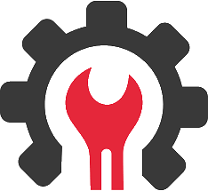
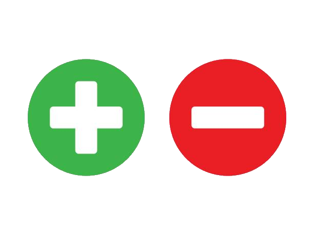

FiveM is een modificatieplatform voor de populaire game Grand Theft Auto V (GTA V). Het stelt spelers in staat om hun eigen multiplayer servers op te zetten en aan te passen, los van de officiële Rockstar-servers. Hierdoor kunnen spelers unieke gameplay-ervaringen creëren die verder gaan dan wat standaard in GTA V wordt aangeboden.
Hoe werkt fivem?

Standalone Multiplayer Framework
FiveM maakt gebruik van een eigen multiplayer-framework dat is losgekoppeld van de officiële
GTA
Online-servers.
Hierdoor kun je volledig aangepaste servers draaien zonder schending van
Rockstar's gebruikersvoorwaarden (mits je het spel legaal hebt gekocht).
Client-Server Architectuur
Client: De FiveM-client is een applicatie die je installeert op je computer. Het fungeert
als
tussenpersoon tussen jouw computer en de FiveM-servers.
Server: De FiveM-server draait de aangepaste spelwereld. Je kunt deze server lokaal hosten
of
via een hostingprovider.
Custom Scripting
FiveM ondersteunt scripting met meerdere talen, zoals:
- Lua (meest gebruikt)
- C#
- JavaScript
- HTML
- CSS
Dit stelt ontwikkelaars in staat om unieke functies, mods en gameplay te creëren. Denk aan
aangepaste voertuigen, wapens, regels en missies.
Resource Systeem
FiveM maakt gebruik van een resource-systeem waarin elke mod of script als een afzonderlijke
"resource" wordt geladen.
Dit kunnen bestanden zijn die variëren van aangepaste
voertuigen
en
kleding tot complexe scripts voor interactieve systemen zoals:
- Jobs (bijvoorbeeld politie, dokter, crimineel)
- Economieën (zoals bankieren, winkels, en eigendommen)
- Roleplay (voor rollenspelervaringen)
Modding en Ontwikkeling
Ontwikkelaars kunnen bestaande bestanden uit GTA V aanpassen of volledig nieuwe content
maken.
Dit kan door:
- YMAPs en MLOs voor aangepaste gebouwen en interieurs.
- Scripts voor dynamische interacties en systemen.
- Custom voertuigen en skins.
Waar wordt FiveM voor gebruikt

Roleplay (RP) Servers
Het populairste gebruik van FiveM is voor roleplay servers, waar spelers een rol aannemen
(zoals
politieagent, dokter, crimineel, etc.)
en in een gesimuleerde samenleving leven. Bekende
voorbeelden zijn NoPixel en SVRP.
Races en Competitieve Gameplay
Sommige servers focussen op racen of andere competitieve modi, vaak met aangepaste
voertuigen en
unieke circuits.
Minigames en Fun Modes
FiveM-servers kunnen verschillende minigames bieden, zoals survival games, deathmatches of
puzzels.
Creatieve Vrijheid
Ontwikkelaars en hobbyisten gebruiken FiveM om hun eigen creaties tot leven te brengen, van
fantasiewerelden tot hyperrealistische simulaties.
Training en Simulatie
Sommige servers worden gebruikt voor training en simulatie, zoals politie- of
brandweersimulaties.
Voordelen van FiveM:

Aanpasbaarheid:
Bijna elk aspect van de game kan worden aangepast.
Vrijheid:
Los van de beperkingen van Rockstar's servers.
Community-gedreven:
De meeste servers worden gerund door spelers, wat een breed scala aan ervaringen
biedt.
Scripting Support:
Ondersteuning voor meerdere talen biedt ontwikkelaars flexibiliteit.
Nadelen van FiveM:
Complexiteit:
Het opzetten van een server vereist technische kennis, zoals hosting, scripting, en
netwerkconfiguratie.
Prestatie-eisen:
Een server met veel resources kan veel van een computer of hostingserver vragen.
Incompatibiliteit met GTA Online:
Mods en progressie in FiveM zijn niet overdraagbaar naar GTA Online.
Beheersproblemen:
Grote servers vereisen veel moderatie en management om hackers en trollen te
voorkomen.